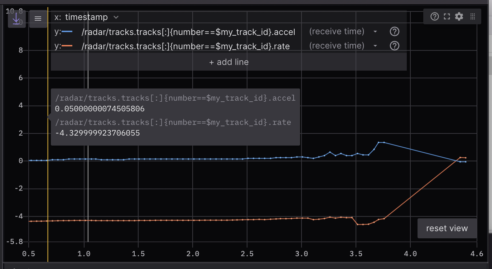

使用Foxglove Studio可视化ROS 2数据
Foxglove Studio 是一个开源的可视化和调试工具，用于处理你的机器人数据。
它提供了多种方式，以使开发尽可能便捷 - 可以作为独立的桌面应用程序运行，通过浏览器访问，甚至可以在您自己的域上自行托管。
在`GitHub <https://www.github.com/foxglove/studio>`__上查看源代码。
安装
要使用Web应用程序，只需打开Google Chrome并导航到`studio.foxglove.dev <https://studio.foxglove.dev>`__。
要在Linux、macOS或Windows上使用桌面应用程序，请直接从`Foxglove Studio网站<https://foxglove.dev/download>`__下载。
连接到数据源
打开Foxglove Studio后，您将看到一个对话框，其中列出了`所有可能的数据源<https://foxglove.dev/docs/studio/connection/data-sources>`__。
要连接到您的ROS 2堆栈，请点击“打开连接”，选择“Rosbridge（ROS 1和2）”选项卡，并配置您的“WebSocket URL”。
您还可以直接将任何本地 ROS 2 .db3 文件拖放到应用程序中以加载它们进行回放。
注解
要在 ROS 2 文件中加载自定义消息定义，请尝试将其转换为 MCAP 文件格式。
查看 Foxglove Studio 文档 获取更详细的说明。
使用面板构建布局
面板 是可以配置和排列成`布局 <https://foxglove.dev/docs/studio/layouts>`__的模块化可视化界面。您还可以保存您的布局，以供将来使用，供个人参考或与您的大型机器人团队共享。
在侧边栏的“添加面板”选项卡中找到可用面板的完整列表。
我们特别强调以下一些特别有用的面板：
1 3D：在三维场景中显示可视化标记
向您的3D面板场景中添加基本形状（箭头、球体等）和更复杂的可视化（占用网格、点云等），请发布标记消息。
通过左侧的主题选择器选择要显示的主题，并在“编辑主题设置”菜单中配置每个主题的可视化设置。

2 诊断：过滤和排序诊断消息
在运行的反馈中从具有``diagnostic_msgs/msg/DiagnosticArray``数据类型的主题中显示已观察到的节点的状态（即陈旧、错误、警告或正常），并显示给定``diagnostic_name/hardware_id``的诊断数据。

更多详细信息，请参考`文档 <https://foxglove.dev/docs/studio/panels/diagnostics>`__。

4 日志：查看日志消息
要实时查看``rcl_interfaces/msg/Log``消息，请使用桌面应用程序连接到正在运行的ROS堆栈。要查看来自预录制数据文件的``rcl_interfaces/msg/Log``消息，您可以将文件拖放到`web <https://studio.foxglove.dev>`__ 或桌面应用程序中。
接下来，将`日志 <https://foxglove.dev/docs/studio/panels/log>`__ 面板添加到您的布局中。如果您已正确连接到ROS堆栈，则现在应该看到您的日志消息列表，并能够按节点名称或严重级别进行筛选。
有关更多详细信息，请参阅`文档 <https://foxglove.dev/docs/studio/panels/log>`__。
5 Plot: 在时间轴上绘制任意值
在播放时间轴上绘制主题消息路径上的任意值。
指定您想在 y 轴上绘制的主题值。对于 x 轴，可以选择绘制 y 轴值的时间戳、元素索引或另一个自定义主题消息路径。
参考 docs 获取更多详细信息。


{kind=link}
8 URDF Viewer: 查看和操作您的URDF模型
要在Foxglove Studio中可视化和控制您的机器人模型，请打开Web或桌面应用程序，并将 URDF Viewer 面板添加到您的布局中。然后，将您的URDF文件拖放到该面板中以可视化您的机器人模型。

选择任何发布 JointState 消息的主题，以根据发布的关节状态更新可视化（默认为 /joint_states）。
切换到"手动关节控制"模式，使用提供的控制器设置关节位置。

详细信息请参考`文档 <https://foxglove.dev/docs/studio/panels/urdf-viewer>`__。
其他基本操作。
1 查看ROS图
通过`桌面应用程序<https://foxglove.dev/download>`__，`连接<https://foxglove.dev/docs/studio/connection/native>`__到正在运行的ROS堆栈。接下来，在布局中添加一个`主题图<https://foxglove.dev/docs/studio/panels/topic-graph>`__面板。如果已成功连接到ROS堆栈，则应该在该面板中看到ROS节点、主题和服务的计算图。使用面板右侧的控件选择要显示的主题或切换服务。
2 查看和编辑ROS参数
通过`桌面应用程序<https://foxglove.dev/download>`__，连接<https://foxglove.dev/docs/studio/connection/native>`__到正在运行的ROS堆栈。接下来，在布局中添加一个`参数<https://foxglove.dev/docs/studio/panels/parameters>`__面板。如果已成功连接到ROS堆栈，则应该实时查看当前的``rosparams`。您可以编辑这些参数值，将``rosparam``更新发布回ROS堆栈。
3 将消息发布回您的实时ROS堆栈
使用桌面应用程序 <https://foxglove.dev/download>，connect 到正在运行的ROS堆栈。接下来，在您的布局中添加一个 Publish 面板。
指定您要发布的主题，以推断其数据类型，并使用JSON消息模板填充文本字段。
在常见ROS数据类型的下拉菜单中选择数据类型，还将使用JSON消息模板填充文本字段。
在点击“发布”之前，编辑模板以自定义您的消息。